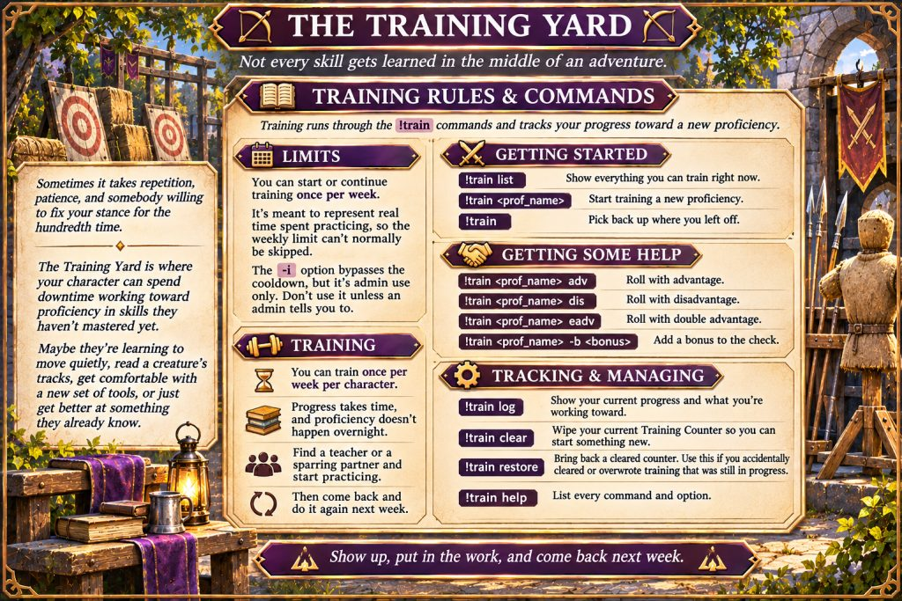

Downtime
Training and study
Not every skill gets learned in the middle of an adventure. Sometimes it takes repetition, patience, and somebody willing to fix your stance for the hundredth time.

There are two ways to pick up something new between scenes: practice at the Training Yard, or study at the Archive.
The Training Yard · !train | The Archive · !research | |
|---|---|---|
| How often | Once a week per character | Once a day per character |
| Teaches | Languages, tools, weapons and skills | Tools, instruments and languages (Trades & Crafts, Tongues & Tunes shelves) |
| Finish line | A set number of sessions; !train log shows your progress | 20 successful researches in that topic |
| Rep | +7 per paid session with a guild trainer | None |
| Also gives | Advanced lessons at 375+ with the trainer's guild | Scholar titles on lore topics (10 successes) |
The Training Yard
!train listshows what you can train right now.!train <proficiency>starts something new;!trainpicks up where you left off.- Add
advordiswhen they apply.!train helplists every command and option. - You can start or continue training once per week. It stands for real time spent practicing, so the weekly limit can't normally be skipped.
- Progress takes time. Find a teacher or a sparring partner, practice, and come back next week.
- Guild trainers, their lessons and costs are on Guild jobs & trainers.
Show up, put in the work, and come back next week.
The Archive
!research "<topic>" "<skill>", once a day. Training topics take 20 successes to complete a tool, instrument or language, and a DM adds it to your sheet. Full topic list on The Archive.
Tools you learned with !train count as proficient automatically for !craft.